Villarrica · Anfión Muñoz esquina Catedral
El verdadero sabor del sur, en la mesa.
Comida chilena casera en el centro de Villarrica.
- 479reseñas en Google
- 4,8de nota promedio
- 999Anfión Muñoz, esquina Catedral
- 0páginas: lamesadelsur.cl ya no existe
El plato de la casa
¿Qué lleva una cazuela del sur?
La de vacuno se hace sólo con osobuco.
- 01
Osobuco
Hueso con carne: le da el caldo.
- 02
Zapallo
Se deshace y espesa.
- 03
Choclo
En trozo, para morder.
- 04
Papa
Entera, cocida en el mismo caldo.
El osobuco lo dicen ellos; el resto de la olla lo confirma la cocina.
Calidad, inocuidad y precios al alcance.
De la carta
Lo que se sirve en La Mesa del Sur
-
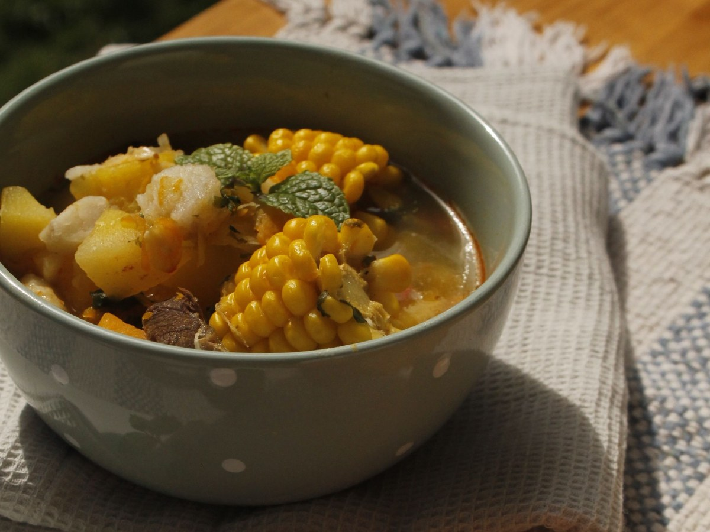
Con osobuco
Cazuela de vacuno
El sabor del sur.
-
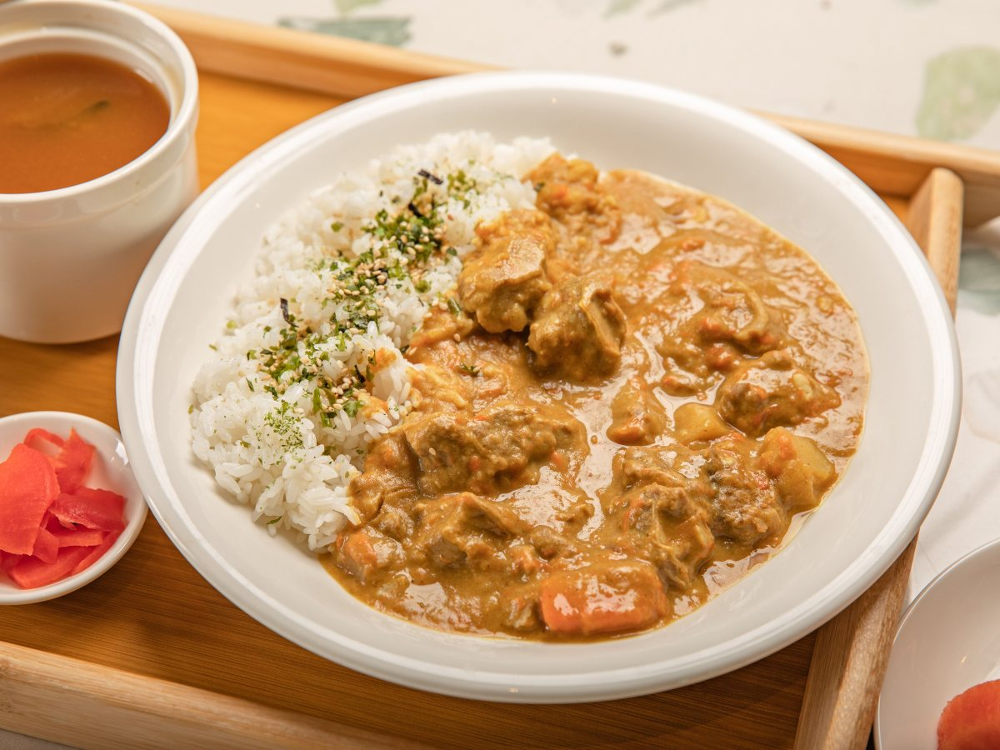
Con papas salteadas
Ají de gallina
Cremoso y suave.
-

Chilenas
Empanadas
Del horno.
-
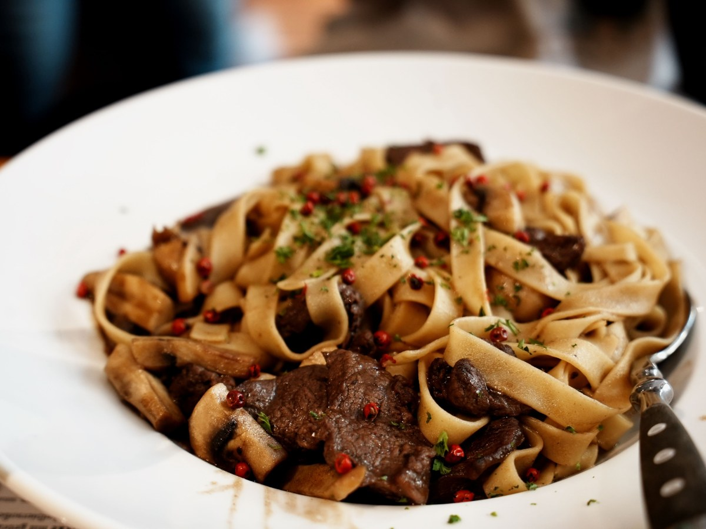
Guisos
Stroganoff
Con arroz.
-
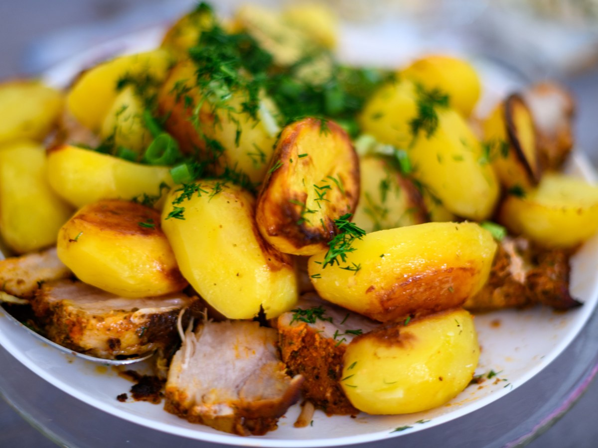
Herencia del sur
Asado alemán
Al horno.
-
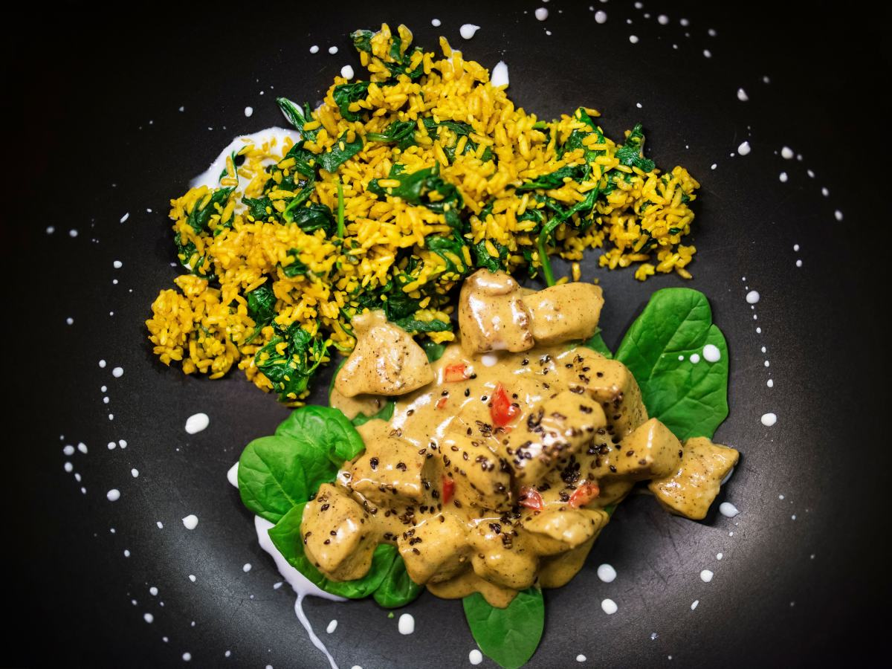
Para variar
Pollo asiático
Salteado.
Platos según sus publicaciones; la carta del día la confirma el restaurante.
479 reseñas y un 4,8.
En plena ciudad turística
Olla, horno y mantel
Un almuerzo en Villarrica
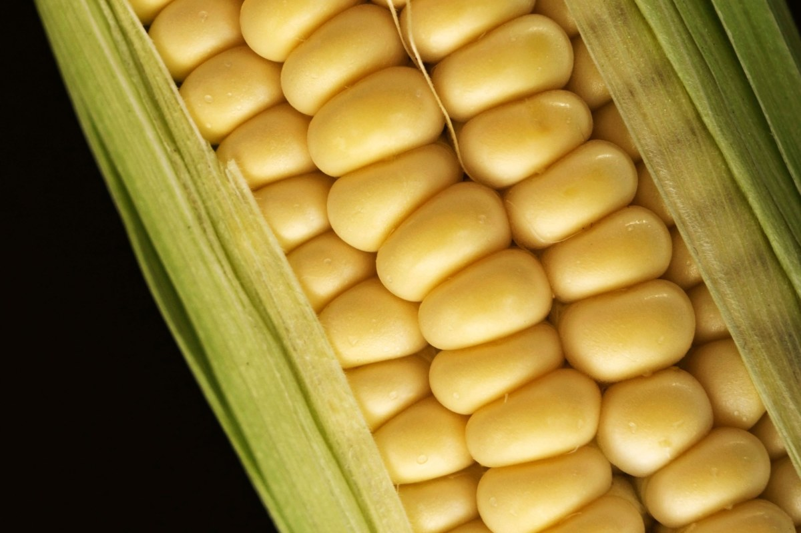
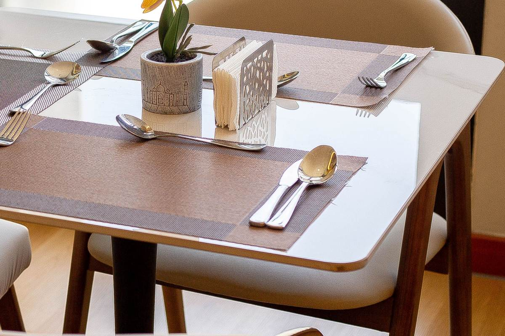
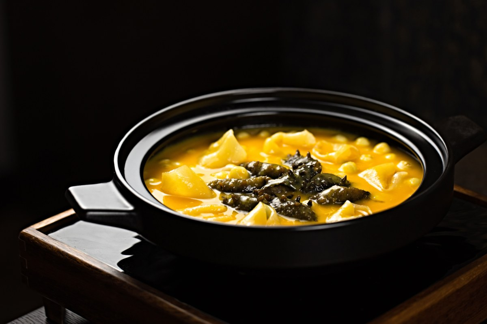
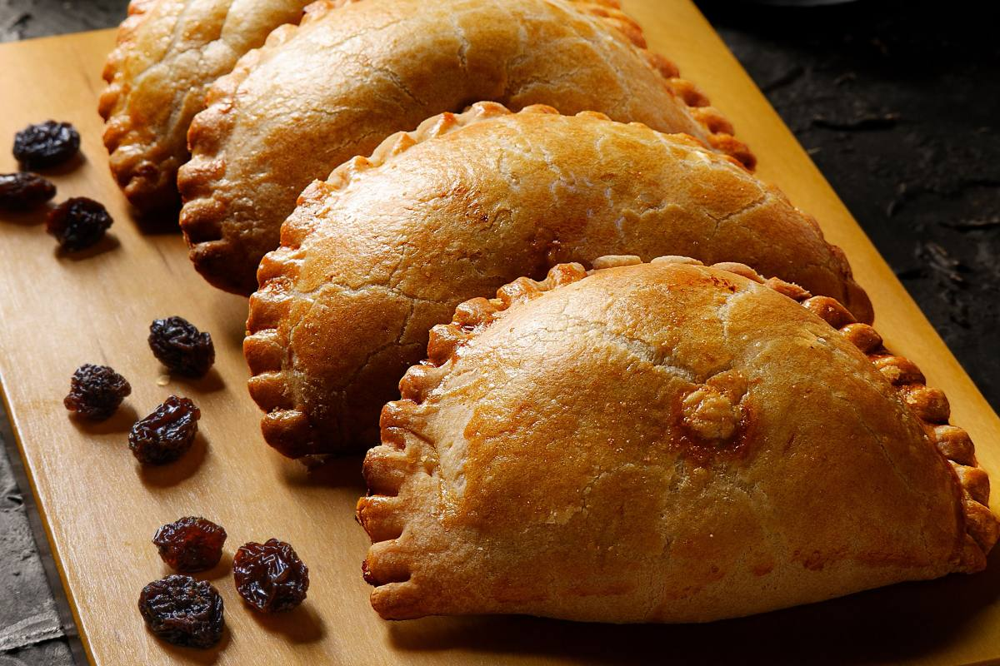
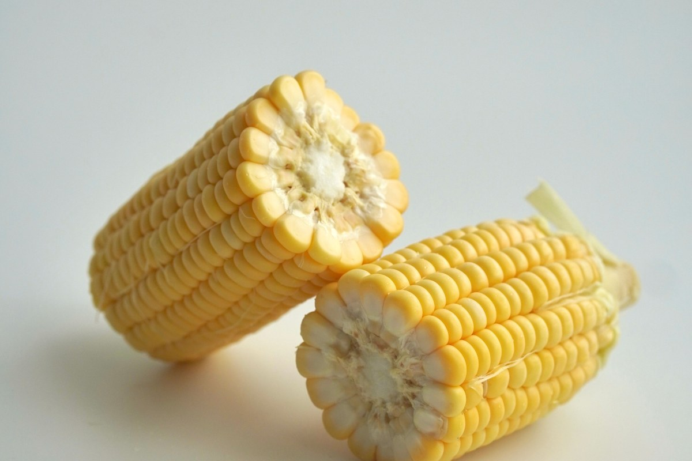
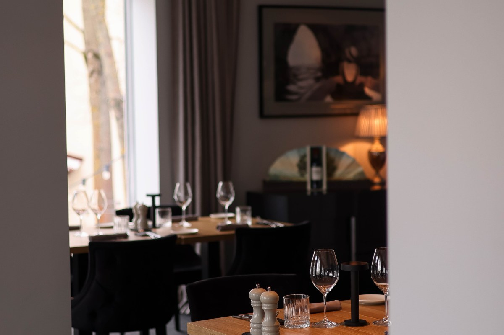
Fotos de referencia: los platos de verdad están en su Instagram.
Dónde estamos
Anfión Muñoz 999, Villarrica
- Dirección
- Anfión Muñoz 999, esquina Catedral
- Teléfono
- (45) 241 1547
- @lamesadelsur
- Horario
- Falta el horario
En verano, llame antes de venir con grupos.
Anfión Muñoz 999, Villarrica Abrir en Google Maps
Para el dueño
Qué es real y qué falta
Lo verificado
El nombre, la dirección, el teléfono, las 479 reseñas con 4,8, sus platos y que lamesadelsur.cl ya no existe.
Lo de ejemplo
La receta de la cazuela más allá del osobuco, y las fotos.
Lo que falta
El horario de verano e invierno, precios, reservas por WhatsApp y fotos propias.